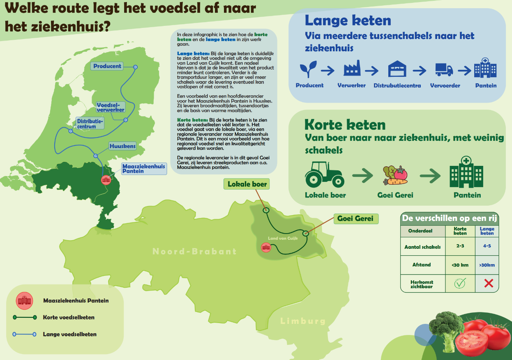

Hoe komt er meer lokaal voedsel op ons bord?
Ziekenhuizen, scholen, zorginstellingen en restaurants kopen dagelijks voedsel in. Door samen te werken met boeren en leveranciers kunnen zij meer lokale producten aanbieden.
1. Samenwerken met lokale boeren
Door rechtstreeks of via regionale leveranciers producten in te kopen, kunnen afnemers lokale ondernemers steunen.
2. Slimmer transporteren
Door bestellingen te bundelen en transport te combineren, kunnen verschillende afnemers hun voorraden perfect afstemmen met de leveranciers.
3. Meer lokale producten op het menu
Met seizoensproducten uit de regio kunnen ziekenhuizen, zorginstellingen, maar ook scholen en horeca hun menu gevarieerder maken en de herkomst van voedsel zichtbaar maken.
4. Samen inkopen
Scholen, zorginstellingen, en restaurants kunnen gezamenlijk producten bestellen. Dit kan lokale leveranciers helpen om grotere hoeveelheden af te leveren.
Een voorbeeld uit de regio
Maasziekenhuis Pantein werkt samen met Goei Gerei om streekproducten uit Land van Cuijk aan te bieden in het restaurant en Grand Café.
